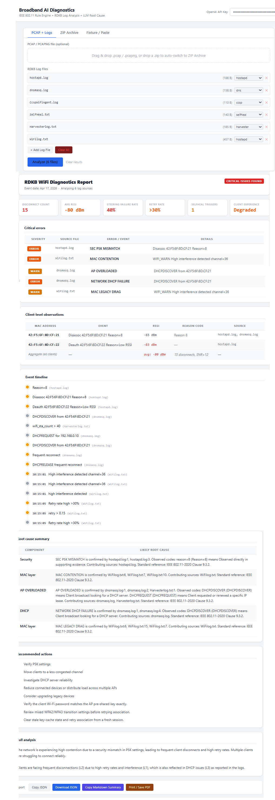

Deterministic, evidence-grounded diagnosis for RDK-B broadband fleets.
The RDK-B Broadband Intelligence Platform is a production-grade, seven-phase system built to turn multi-source gateway telemetry into IEEE 802.11-grounded root-cause reports. The April 2026 project report positions it as a deterministic-first platform for WiFi fault diagnosis, crash forensics, and frontend-driven validation across customer premises equipment at fleet scale, with AI used for explanation and advisory support rather than for unsupported reasoning.
- Multi-source ingestion for PCAP, log archives, fixture payloads, and RDK-B log streams.
- Timeline correlation and 140-feature extraction across PHY, MAC, security, network, and telemetry signals.
- Deterministic rule evaluation with IEEE citations, evidence traceability, and wiki-grounded output.
- Optional ML and LLM layers that explain or reinforce findings without overriding the core engine.
- Manual broadband triage does not scale when a single incident spans 25 or more log streams.
- Cross-layer failures often mix PHY issues, security negotiation, and DHCP or DNS symptoms.
- Enterprise reviewers need reproducible results with a direct path from raw evidence to conclusion.
- The report documents a deployment-ready platform with clear operational gates and a credible roadmap.
Validated across unit, integration, regression, and release-gate suites.
Rule families cover PHY, MAC, security, roaming, network, and AP-capacity failures.
Extracted from correlated events, radiotap headers, counters, and device telemetry.
Seeded confirmed labels spanning nine root-cause categories for ML advisory training.
Parser framework normalizes major RDK-B log surfaces into typed events.
Phases 1 through 4 complete on a representative six-file, 1-2 MB investigation set.
Load targets specify P95 latency at or below 2,000 ms once live Kafka validation runs.
Phase 7 code is complete, with remaining work focused on operational prove-out.
Frontend Investigation Workspace
The project report describes the frontend as a light-theme, mobile-responsive investigation workspace that runs directly in the browser. It is designed for drag-and-drop intake of PCAP captures, individual RDK-B logs, compressed archives, and fixture payloads, then renders structured diagnosis without forcing the user to leave the page.
Three investigation modes
The UI supports PCAP plus logs, ZIP archive upload, and fixture or paste mode so teams can move from controlled demos to full incident investigation with the same workflow.
What the report renders
Critical issues, client observations, timeline sequencing, ranked root causes, IEEE citations, and remediation actions are all surfaced in one browser-native report.
Why it matters
This frontend-led design gives NOC teams, validation engineers, and architects a shared evidence view instead of making each audience interpret raw logs on its own.

Architecture and Data Flow
The report frames the platform as a layered system with typed contracts at every handoff. Inputs move from ingestion through deterministic processing before they ever reach advisory ML or LLM components, which is how the platform preserves reproducibility and evidence integrity.
UX and API boundary
Frontend upload workflow, report rendering, and API stubs sit at the system boundary for intake and output.
Orchestration layer
Phase sequencing, gate enforcement, pipeline assembly, and typed schema checks coordinate every run.
AI and model advisory
Rule engine, XGBoost classifier, anomaly detection, and LLM explanation stay isolated by clearly defined contracts.
Data and knowledge
Feature persistence, wiki retrieval, and training datasets provide the grounding surface for every conclusion.
Observability
Structured logs, metrics collection, and tracing support release gates, debugging, and production operations.
Security and governance
Bearer auth, credential validation, input sanitization, and feedback-driven governance guard the platform boundary.
Upload
Accept PCAP, logs, archives, and fixtures from the investigation workspace.
Ingest
Decode binary captures and archive members into raw bytes and text streams.
Parse
Convert raw data into typed NormalizedEvent records across 25 or more log types.
Correlate
Merge signals onto a unified timeline keyed by MAC address and timestamp.
Feature extract
Build the 140-feature vector with RSSI, retries, DHCP, DFS, and telemetry state.
Rule evaluate
Run deterministic IEEE-grounded rules and attach mandatory evidence for every fired condition.
ML advise
Use XGBoost and Isolation Forest to reinforce or challenge conclusions without replacing the rule engine.
Wiki ground
Retrieve playbooks and standards context through the platform knowledge base.
LLM explain
Generate narrative only after the deterministic result is complete and evidence-bounded.
Render
Deliver a diagnostic report with ranked causes, citations, and recommended next actions.
The report emphasizes hard failures on missing mandatory evidence rather than silent degradation. That choice keeps the platform auditable and makes unsupported conclusions fail fast instead of leaking into operator-facing output.
Deterministic AI, ML, and LLM Design
The report is explicit about the AI architecture: deterministic rules are the irreducible diagnostic core, while ML and LLM components remain secondary and advisory. That separation reduces hallucination risk, keeps identical inputs reproducible, and makes the system suitable for enterprise review.
| Dimension | Deterministic core | LLM layer |
|---|---|---|
| Invocation | Always runs and produces the required diagnostic result. | Optional explanation stage when model access and context are available. |
| Primary input | Typed feature vectors, parsed events, radiotap fields, and grounded rules. | Pre-assembled evidence package, feature values, rule results, and wiki citations. |
| Output style | Structured RuleResult and DiagnosticReport artifacts with IEEE references. | Human-readable explanation constrained to the supplied evidence package. |
| Failure mode | Hard fail or structured error when mandatory evidence is missing. | Graceful skip or fallback to deterministic report when generation fails. |
| Operational role | Authoritative root-cause engine. | Explanation, drift narrative, and rule-proposal support. |
ML advisory layer
The platform trains an XGBoost classifier and Isolation Forest anomaly detector on 108 seed examples across nine root-cause categories. The report positions these models as confidence and anomaly advisors, not as overrides to deterministic output.
No fine-tuning claims
The report is technically honest about model development: no LLM fine-tuning or weight modification has been performed. Improvement happens through prompt engineering, structured output contracts, evaluation loops, and human review.
Token discipline
Instead of shipping raw logs to the model, the system trims context down to the evidence package that matters. The report estimates 40 to 60 percent fewer LLM calls than an AI-first diagnostic flow.
Hallucination control and governance
The report describes strict context bounding, structured JSON output contracts, and fallback logic that rejects unsupported claims. If evidence is insufficient, the system is designed to return structured uncertainty rather than a speculative answer.
Continuous self-improvement without retraining the LLM
Closed-loop evaluation drives rule improvement: false positives and false negatives feed a rule proposal workflow, human label sessions update confirmed labels, and retraining keeps the advisory models aligned with real investigation outcomes.
Testing, Performance, and Demo Readiness
The report backs the platform with a strong validation story. It calls out 695 passing tests across 53 test files, zero failures, release-gate automation, and a demo workflow that can be run either from the browser workspace or from backend orchestration scripts.
Unit, integration, domain regression, infrastructure, and release-check coverage.
XGBoost and Isolation Forest inference add minimal latency on top of deterministic analysis.
Explanation latency depends on upstream provider response time, not on the diagnostic core.
Fixture-backed scenarios support live demos without requiring real customer artifacts.
Testing strategy
- Module-level tests verify parsing, rule firing, precedence, and error handling.
- Integration suites validate multi-module flows such as correlation and report assembly.
- Release checks gate deployment on metrics, health checks, and expected structured outputs.
Representative E2E coverage
- Security mismatch scenarios with 4-way handshake failure evidence.
- MAC contention and multi-cause incidents spanning logs, PCAP, and DHCP signals.
- Archive extraction, fixture-paste mode, and full report rendering validation.
Readiness signal
- Phase 8.1 hardening completed input validation, pipeline errors, and operational gate checks.
- Frontend demos work today while backend integration remains a scoped follow-on milestone.
- Remaining blockers are operational environments, not missing core engineering.
Security, Evidence Integrity, and Enterprise Mapping
Security hardening is spread across the ingestion, API, credential, and observability layers. The report also maps the platform to a broader enterprise AI taxonomy, making it clear which capabilities are active, partial, planned, or waiting on operational rollout.
Security and hardening highlights
Input sanitization blocks path traversal, malformed OIDs, and oversized payloads before they hit parsing. Bearer authentication, credential validation, rate limiting, and structured-log redaction protect the operational boundary. Evidence exports use structured excerpts instead of full raw logs to reduce accidental data exposure.
Evidence integrity
Every diagnostic conclusion must trace back to a source artifact, an extracted feature or line-level trigger, and a supporting rule or standards reference. Unsupported claims are explicitly disallowed by the output contract.
| Architecture component | Status | Report-backed implementation note |
|---|---|---|
| LLM runtime | Active | Anthropic Claude supports explanation and governance flows; GPT-4o-mini powers the current frontend-only path. |
| RAG grounding | Partial | Karpathy-style deterministic wiki retrieval is active; semantic retrieval remains a planned enhancement. |
| Vector database | Planned | Pinecone, Weaviate, and FAISS are named as roadmap candidates for hybrid retrieval. |
| Streaming and Kafka | Implemented | Code and load suites are ready, with live cluster validation still pending. |
| Feedback loop | Active | Human review, retraining triggers, and eval-driven rule evolution are already part of the design. |
| Container deployment | Ready | Docker assets exist, but smoke testing in the production stack remains one of the open gates. |
Limitations and Forward Roadmap
The report closes with a balanced assessment: the platform is engineering-complete and demo-ready, but it is candid about current limitations and the work needed to fully operationalize the architecture at scale.
Current limitations
- LLM output remains explanatory and may still misstate severity when evidence is sparse.
- Deep packet inspection, TCP reassembly, and encrypted payload inspection are out of scope.
- The deterministic rule catalog cannot cover novel firmware or topology failures until new rules are reviewed and added.
- High-concurrency, multi-tenant backend service behavior depends on completing the FastAPI integration and shared backing services.
- Training data scale is intentionally modest, which is why ML stays advisory instead of authoritative.
Near-term
Close the live label, Kafka, and Docker gates while replacing frontend-direct model calls with backend-enforced context bounding, rate limiting, and audit logging.
Medium-term
Add hybrid retrieval, expand the training set through active learning, and explore richer model options for interdependent multi-cause investigations.
Long-term
Push toward autonomous fleet intelligence with real-time cohort monitoring, ticketing integrations, SLA-aware alert routing, and closed-loop adaptation to new failure modes.
The project is presented as a complete, production-grade deterministic diagnostic foundation whose remaining steps are mostly operational enablement. The biggest unfinished engineering item is the final backend integration that moves frontend-direct LLM usage behind the platform's governance and audit boundary.